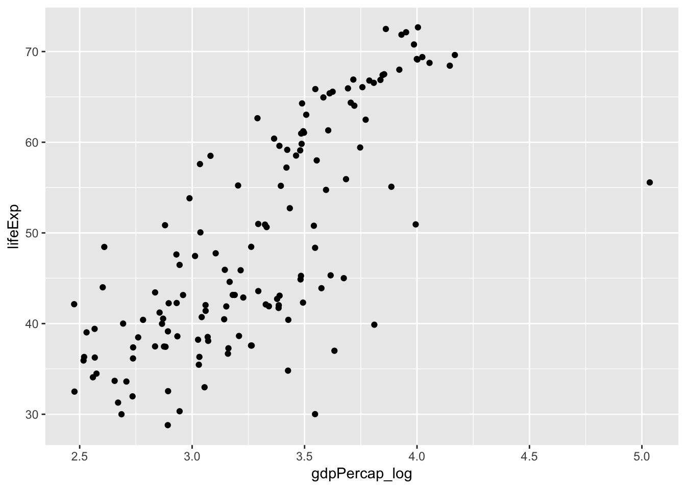
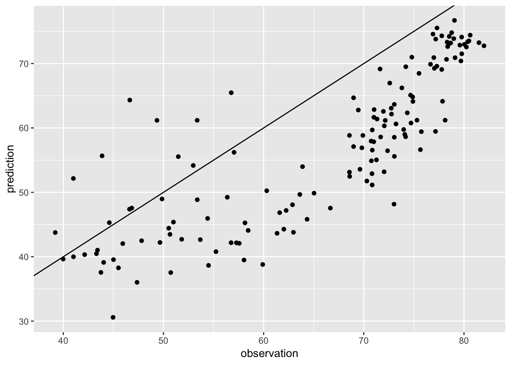
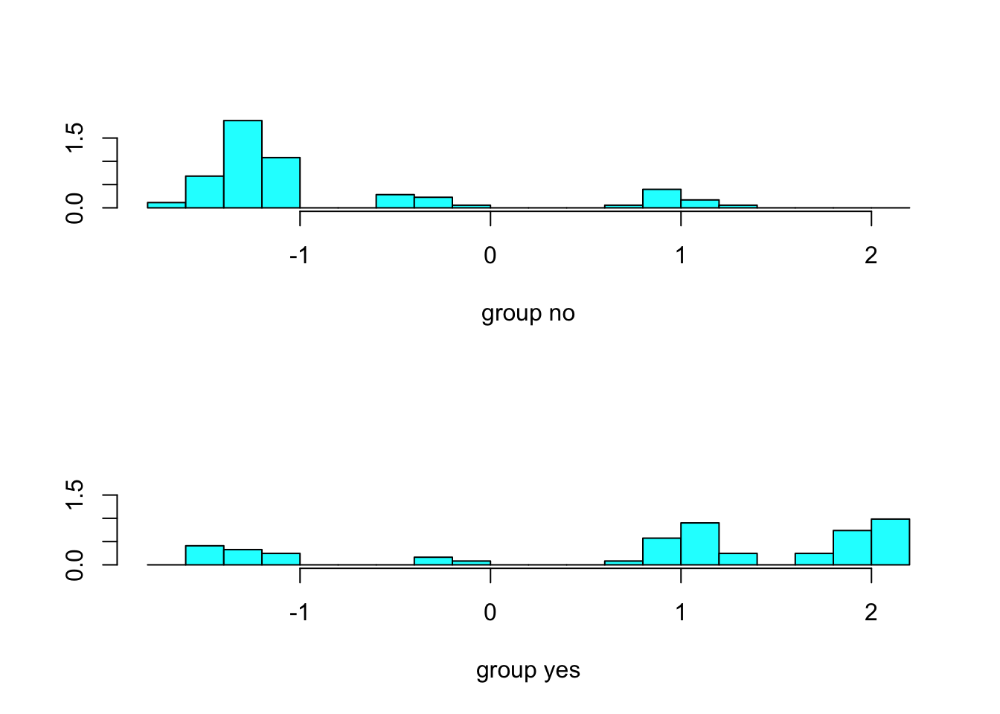
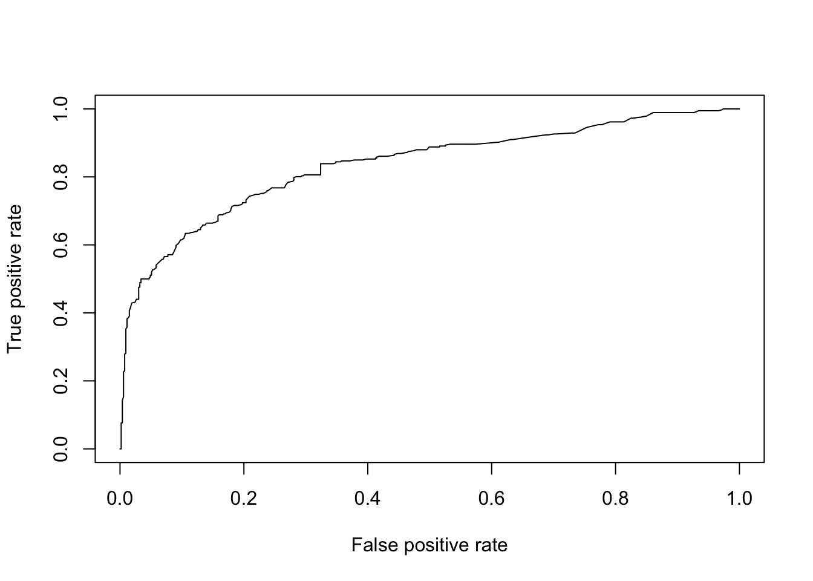

회귀와 분류
Basic concepts of statistics & statistical modeling
우리는 표본의 정보를 사용하여 모집단의 특징을 추정할 수 있습니다. 예를 들어, 어떤 변수 Y의 모평균 \(\mu\)를 알고자 한다고 해봅시다. 유감스럽게도 \(\mu\)는 알려져 있지 않습니다. 그러나, 우리는 Y의 n개 관측치, \(y_1\), \(y_2\), …, \(y_n\)를 알수 있고, 이를 사용하여 \(\mu\)를 추정할 수 있습니다. 즉, 아래와 갈이 표본평균을 모평균(정확히 말하면 모평균의 추정치)으로 합리적으로 추정할 수 있습니다.
\[\hat{\mu}=\overline{y}\]
그럼, 표본평균은 모평균의 추정값으로 얼마나 정확한가요?
일반적으로 이 질문에 대한 답은 표준 오차(standard error)를 계산하는 것입니다. 표준 오차는 추정치(여기서는 모평균의 추정치가 되겠네요)의 표준 편차입니다. 즉, 표본 평균의 표준 편차, 이것이 표준 오차이며 잘 알려진 식은 아래와 같습니다.
\[SE = \frac{\sigma}{\sqrt{n}}\] \(\sigma\): 표본 표준 편차 \(n\): 관측치의 개수
[Standard error & bootstrapping] [standard error and bootstrapping](https://www.youtube.com/watch?v=XNgt7F6FqDU)
표준 오차는 신뢰구간을 계산하는데 사용될 수 있습니다. [동영상] [confidence interval](https://www.youtube.com/watch?v=TqOeMYtOc1w)
선형 회귀(linear regression)
기계학습의 가장 단순한 기법인 선형 회귀에 관한 것을 먼저 살펴보겠습니다.
선형 회귀는 나중에 소개할 최근의 기계학습 기법만큼 흥미롭지 않을 수도 있지만, 여전히 유용하고 자주 사용되는 방법입니다. 사실 많은 기계학습 기법이 선형회귀의 일반화 혹은 확장으로 볼 수 있습니다. 따라서, 더 복잡한 기계학습 기법에 대해 학습하기 전에 선형회귀에 대해 잘 이해하는 것이 매우 중요합니다.
Linear model: least squares, residuals, R^2, F-statistic
자, 그럼 이론은 이해했으니, 다음으로 실제로 선형 회귀 모델을 이용해봅시다.
먼저 gapminder 자료를 기억해봅시다.
gapminder 데이터에서 기대수명은 일인당 국민소득과 연관이 있다고 말할 수 있을까요?
일인당 국민소득과 기대수명의 관계를 선형 모델로 설명할 때, 선형모델은 두 변수간의 관계를 얼마나 잘 설명할 수 있을까요?
우리는 선형모델을 이용해서 일인당 국민소득으로 기대 수명을 얼마나 정확하게 예측할 수 있을까요?
library(gapminder)
library(dplyr)
library(ggplot2)gapminder_1952 = gapminder %>%
filter(year == 1952) %>%
mutate(gdpPercap_log = log10(gdpPercap))ggplot(gapminder_1952, aes(gdpPercap_log, lifeExp)) + geom_point()
attach(gapminder_1952)linear model을 적합시키는 함수로 lm()을 사용합니다.
lm.fit = lm(lifeExp ~ gdpPercap_log)model fit의 결과를 보기위해 summary() 함수를 사용합니다.
summary(lm.fit)
##
## Call:
## lm(formula = lifeExp ~ gdpPercap_log)
##
## Residuals:
## Min 1Q Median 3Q Max
## -28.9571 -5.7319 0.7517 6.5770 13.7361
##
## Coefficients:
## Estimate Std. Error t value Pr(>|t|)
## (Intercept) -17.846 5.067 -3.522 0.000578 ***
## gdpPercap_log 20.331 1.526 13.326 < 2e-16 ***
## ---
## Signif. codes: 0 '***' 0.001 '**' 0.01 '*' 0.05 '.' 0.1 ' ' 1
##
## Residual standard error: 8.146 on 140 degrees of freedom
## Multiple R-squared: 0.5592, Adjusted R-squared: 0.556
## F-statistic: 177.6 on 1 and 140 DF, p-value: < 2.2e-161. 기대수명은 일인당 국민소득과 연관이 있다고 말할 수 있을까요?
위 질문에 답하기 위해 우리는 다음 두 가지를 하였습니다.
1. fit a linear model 2. test the hypothesis: \(\beta_x\) = 0
위 2번 가설 검정에 t-statistic 을 사용하였습니다. t statistic formula 는 아래와 같습니다.
\[t=\frac{\overline{x}-\mu_o}{SE}\] \(\overline{x}\): sample mean (sample coefficient in linear regression) \(\mu_0\): population mean (population coefficient in linear regression) SE: standard error (of the coefficient in linear regression)
2. 일인당 국민소득과 기대수명의 관계를 선형 모델로 얼마나 설명할 수 있을까요?
\[R^2 = \frac{TSS - RSS}{TSS}\]
- \(R^2\): the proportion of the total variation explained by the fit (regression model) - TSS: Total sum of squares (aka, SS around the mean) - RSS: Residual sum of squares (aka, SS around the fit)
[Note]
How different is the multiple R-squared from the Adjusted R-squared?
The adjusted R-squared is a modified version of R-squared that has been adjusted for the number of predictors in the model. The adjusted R-squared increases only if the new term improves the model more than would be expected by chance. It decreases when a predictor improves the model by less than expected by chance. It is always lower than the R-squared.
- F-statistic
- the variance explained by the fit divided by the variance not explained by the fit
3. 우리는 선형모델을 이용해서 일인당 국민소득으로 기대 수명을 얼마나 정확하게 예측할 수 있을까? (Can we predict accurately?)
앞에서 1952년 데이터를 이용해서 일인당 국민소득(정확히는 로그변환한)에서 기대수명을 예측하는 단순선형모델을 만들었습니다. 기대수명은 일인당 국민소득과 유의한 상관관계가 있으며, 단순 선형모델의 \(R^2\)는 0.56, 즉 기대수명 변동의 56%가 이 모델로 설명된다는 것을 확인하였습니다.
이제, 1952년 데이터를 이용해 학습시킨 이 단순회귀 모델을 이용해 2002년 기대수명을 예측해봅시다.
gapminder_2002 = gapminder %>%
filter(year == 2002) %>%
mutate(gdpPercap_log = log10(gdpPercap)) %>%
select(lifeExp, gdpPercap_log)예측값의 산출을 위해 predict() 함수를 사용합니다.
예측값과 실제 관측값이 얼마나 다른지 살펴봅시다.
df = data.frame(observation = gapminder_2002$lifeExp, prediction = pred)
ggplot(df, aes(observation, prediction)) + geom_point() + geom_abline(slope = 1, intercept = 0)
회귀모델의 예측 정확도를 나타내는 정량 지표로 RMSE (Root mean squared error)를 사용합니다.
MSE = variance = average SS not explained by the fit
rmse = function(x){
sqrt(sum((residuals(x)^2))/df.residual(x))
} # x = lm.fit rmse(lm.fit) # gapminder_1952
## [1] 8.146311
rmse(lm(observation ~ prediction, df)) # gapminder 2002
## [1] 6.962083Confidence interval을 구해봅시다.
분류(classification)
classifier: assign a probability to each class
logistic regression
로지스틱 회귀는 회귀라는 이름을 가지고 있지만, 분류기로 광범위하게 사용됩니다. 분류 문제는 결국 결과 변수가 범주 변수일 때 결과가 특정 범주일 확률을 구하는 문제로 볼 수 있습니다.
먼저 odds 개념과 왜 log odds 를 사용하는지 알아봅시다.
Odds and Log(Odds)
[from 3min][Logistic regression overview: Logit function](https://www.youtube.com/watch?v=yIYKR4sgzI8)
logistic function \[y = \frac{1}{1 + e^{-x}}\] 로지스틱 함수의 출력값은 항상 0에서 1사이입니다. 시그모이드 모양을 가져서 시그모이드 함수라고 합니다.
우리가 범주가 2개인 분류 문제를 푼다고 하겠습니다.
그리고, 아래와 같이 odds를 선형 함수로 모델링해보겠습니다.
\[\frac{P(X)}{1-P(X)} = \beta_0+\beta_1X\]
위 식에서 좌변은 0에서 무한대, 우변은 모든 값이 가능합니다. 양변의 범위가 맞지 않죠. 좌변에 log 를 취해 이 문제를 해결해봅시다. odd의 로그 변환을 logit 변환이라고 부릅니다.
\[\frac{P(X)}{1-P(X)} = e^{\beta_0+\beta_1X}\]
Logit \[log(\frac{P(X)}{1-P(X)}) = \beta_0 + \beta_1X\]
위 식을 정리하면 다음과 같이 됩니다.
\[P(X) = \frac{1}{1+e^{-(\beta_0+\beta_1X)}}\]
가장 앞에서 보았던 로지스틱 함수가 됩니다. logistic regression은 결국 linear model의 일반화된 형태에 속하는 것입니다.
titanic survival classification
자, 이제 실습을 해봅시다.
library(carData)head(TitanicSurvival)
## survived sex age passengerClass
## Allen, Miss. Elisabeth Walton yes female 29.0000 1st
## Allison, Master. Hudson Trevor yes male 0.9167 1st
## Allison, Miss. Helen Loraine no female 2.0000 1st
## Allison, Mr. Hudson Joshua Crei no male 30.0000 1st
## Allison, Mrs. Hudson J C (Bessi no female 25.0000 1st
## Anderson, Mr. Harry yes male 48.0000 1st
str(TitanicSurvival)
## 'data.frame': 1309 obs. of 4 variables:
## $ survived : Factor w/ 2 levels "no","yes": 2 2 1 1 1 2 2 1 2 1 ...
## $ sex : Factor w/ 2 levels "female","male": 1 2 1 2 1 2 1 2 1 2 ...
## $ age : num 29 0.917 2 30 25 ...
## $ passengerClass: Factor w/ 3 levels "1st","2nd","3rd": 1 1 1 1 1 1 1 1 1 1 ...
summary(TitanicSurvival)
## survived sex age passengerClass
## no :809 female:466 Min. : 0.1667 1st:323
## yes:500 male :843 1st Qu.:21.0000 2nd:277
## Median :28.0000 3rd:709
## Mean :29.8811
## 3rd Qu.:39.0000
## Max. :80.0000
## NA's :263타이타닉호의 생존 데이터입니다. 생존 여부를 예측하는 분류 문제를 다루어봅시다.
missing data point 가 있군요(age, NA’s). 해당 observation은 제거하기로 합시다.
TitanicSurvival = TitanicSurvival[complete.cases(TitanicSurvival),]다음으로 logistic regression model을 데이터에 적합시켜봅시다(fit).
glm.fit = glm(survived ~., data = TitanicSurvival, family = "binomial")logistic regression model fit 의 결과를 해석해봅시다.
summary(glm.fit)
##
## Call:
## glm(formula = survived ~ ., family = "binomial", data = TitanicSurvival)
##
## Deviance Residuals:
## Min 1Q Median 3Q Max
## -2.6399 -0.6979 -0.4336 0.6688 2.3964
##
## Coefficients:
## Estimate Std. Error z value Pr(>|z|)
## (Intercept) 3.522074 0.326702 10.781 < 2e-16 ***
## sexmale -2.497845 0.166037 -15.044 < 2e-16 ***
## age -0.034393 0.006331 -5.433 5.56e-08 ***
## passengerClass2nd -1.280570 0.225538 -5.678 1.36e-08 ***
## passengerClass3rd -2.289661 0.225802 -10.140 < 2e-16 ***
## ---
## Signif. codes: 0 '***' 0.001 '**' 0.01 '*' 0.05 '.' 0.1 ' ' 1
##
## (Dispersion parameter for binomial family taken to be 1)
##
## Null deviance: 1414.62 on 1045 degrees of freedom
## Residual deviance: 982.45 on 1041 degrees of freedom
## AIC: 992.45
##
## Number of Fisher Scoring iterations: 4남자는 여자보다 생존할 확률이 큽니까? 얼마나 큽니까?
exp(coef(glm.fit)[2])
## sexmale
## 0.08226211male 인 경우 female 에 비해서, 생존/죽음 odds가 0.08배 (즉, 훨씬 낮다, 10배 이상), Odds ratio 개념…
독립 변수가 범주형 변수일 때, 회귀 모델에서는 이를 dummy variable로 변환합니다.
contrasts(TitanicSurvival$survived)
## yes
## no 0
## yes 1
contrasts(TitanicSurvival$passengerClass)
## 2nd 3rd
## 1st 0 0
## 2nd 1 0
## 3rd 0 1Classification model accurancy
앞에서 회귀 문제에서는 모델의 정확도는 RMSE 로 평가한다고 했습니다.
분류 문제에서는 모델의 정확도를 어떻게 평가할까요?
먼저, 위에서 만든 모델을 사용하여 타이타닉호의 생존 결과를 예측해봅시다.
glm.probs = predict(glm.fit, type = "response")자, 그럼 classification prediction accuracy를 계산해봅시다.
glm.pred = rep("no", length(glm.probs))
glm.pred[glm.probs>0.5] = "yes"
table(glm.pred, TitanicSurvival$survived)
##
## glm.pred no yes
## no 520 126
## yes 99 301
mean(glm.pred == TitanicSurvival$survived)
## [1] 0.7848948위의 예제는 training data 에서 성능을 평가한 것이고, 우리가 실제로 관심이 있는 것은 모델 훈련에 사용되지 않은 새로운 데이터셋에서의 성능일겁니다. 아래는 전체 데이터셋을 training set 과 test set 으로 나누고, training set에서 만든 모델을 test set에 적용해 성능을 평가한 것입니다.
set.seed(1)
index = sample(1:1046, round(1046/7), replace = F)
train.data = TitanicSurvival[index,]
test.data = TitanicSurvival[-index,]fit the model with training data, and predict in test data
glm.fit = glm(survived ~., data = train.data,
family = "binomial")
glm.probs = predict(glm.fit, test.data, type = "response")confusion matrix & accuray
glm.pred = rep("no", 1046-round(1046/7))
glm.pred[glm.probs>0.5] = "yes"
table(glm.pred, test.data$survived)
##
## glm.pred no yes
## no 447 115
## yes 84 251
mean(glm.pred == test.data$survived)
## [1] 0.7781494Linear discrminant analysis (LDA)
로지스틱 회귀는 로지스틱 함수를 이용하여 두 개의 반응 변수 클래스에 대해 \(Pr(Y=k|X=x)\)를 직접 모델링한다.
이제 LDA라고 불리는 대안 기법에 대해 알아보자.
LDA에서는 반응 변수 Y의 각 클래스내의 관측치들이 클래스 별로 평균(\(\mu_k\))과 클래스 공통 분산(\(\sigma^2\))을 갖는 정규분포를 따른다는 가정하에 이 파라미터에 대한 추정값을 베이즈 분류기에 대입한 것이다.
베이즈 뷘류기(Bayes classifier)는 설명변수 X가 \(x\)로 주어졌을 때 반응변수 Y가 \(k\) 클래스일 확률을 베이즈 정리를 이용해 구하고, 이에 따라 관측치를 분류한다.
\[P(Y=k|X=x)\]
베이즈 정리(Bayes theorem)를 기억하자.
\[P(B|A) = \frac{P(A|B)\times P(B)}{P(A)}\]
베이즈 정리를 베이즈 분류기에 적용하면 아래 식이 된다.
\[P(Y=k|X=x) = \frac{P(X=x|Y=k) \times P(Y=k)}{\sum_{l=1}^k P(X=x|Y=l)} \]
위 베이즈 정리가 의미하는 것은 \(P(Y=k|X=x)\) - 사후 확률이라고 한다 - 를 직접 계산하는 대신에 \(P(Y=k)\)와 \(P(X=x|Y=k)\) - 사전 확률 - 의 추정치를 통해 구할 수 있다는 것이다.
\(P(Y=k)\) 추정은 쉽다. 즉, k번째 클래스에 속하는 관측치들의 비율을 단순히 계산하면 된다.
하지만, \(P(X=x|Y=k)\)에 대한 추정은 어떤 분포를 가정하지 않는다면 어렵다. LDA는 사전확률을 추정하기 위해 아래와 같은 가정을 한다.
Assumptions in LDA
- normal distribution of \(P(X=x|Y=k)\)
- common variance across different k class
이제 우리는 k 클래스에 속한 관측치의 평균과 분산(공통)을 구해 확률밀도함수 \(P(X=x|Y=k)\)를 추정할 수 있고, 결국 \(P(Y=k|X=x)\)도 추정할 수 있다. (정규분포의 확률밀도함수 참조)
Calculate posterior probability with…
- P(Y=k): proportion
- \(\mu_k: mean(X)\ in\ class\ k\)
- \(\sigma^2: variance\)
최종적으로 얻어지는 분류기는 다음 식을 최대로 하는 클래스에 관측치를 할당하는 것과 동일하다.
\[\hat{\delta_k} = x\times\frac{\hat{\mu_k}}{\hat{\sigma}^2}-\frac{\hat{\mu_k}^2}{2\hat{\sigma}^2}+log(\hat{\pi_k})\] 여기서 \(\delta_k\)는 linear disciminant function 이라고 한다. 분류기 이름에 선형이라는 말이 있는 것은 위 판별함수가 x의 선형함수이기 때문이다.
figure 
LDA는 나중에 살펴볼 PCA (principal component analysis)와 매우 유사하다. 미리 어떤 유사점과 차이점이 있는지 알아보자.
로지스틱 회귀 vs. LDA
1. 클래스의 수가 2보다 많은 반응 변수를 분류해야 할 때가 있다. 다중 로지스틱회귀 모델이 있지만 실제로는 자주 사용되지 않는다.
2. 클래스들이 잘 분리될 때 로지스틱 회귀모델에 대한 모수 추정치는 아주 불안정하다. 선형판별분석은 이런 문제가 없다.
3. 만약 n이 작고, 각 클래스에서 설명변수 X의 분포가 근사적으ㄹ 정규분포이면 선형판별모델이 로지스틱회귀모델보다 더 안정적이다.
LDA 실습
다시 titanic 호로 돌아와보자.
fit LDA to training data
library(MASS)
##
## Attaching package: 'MASS'
## The following object is masked from 'package:dplyr':
##
## selectlda.fit = lda(survived~., data = train.data)LDA fit 결과를 살펴보자.
lda.fit
## Call:
## lda(survived ~ ., data = train.data)
##
## Prior probabilities of groups:
## no yes
## 0.590604 0.409396
##
## Group means:
## sexmale age passengerClass2nd passengerClass3rd
## no 0.8636364 29.67992 0.2954545 0.5909091
## yes 0.2459016 31.13934 0.2622951 0.2950820
##
## Coefficients of linear discriminants:
## LD1
## sexmale -2.248264867
## age -0.008963284
## passengerClass2nd -0.910193062
## passengerClass3rd -1.186282087각 클래스에서 LD 값의 분포를 알고 싶다면…
plot(lda.fit)
위에서 만든 LDA 모델을 이용해 test data에서 생존 결과를 예측해보자.
lda.pred = predict(lda.fit, test.data)names(lda.pred)
## [1] "class" "posterior" "x"confusion matrix
table(lda.pred$class, test.data$survived)
##
## no yes
## no 447 120
## yes 84 246예측 정확도는 얼마인가? 로지스틱회귀모델과 비교하면 성능이 어떠한가?
mean(lda.pred$class == test.data$survived)
## [1] 0.7725753k-nearest neighbor (KNN)
KNN은 어떤 관측치의 클래스를 결정할 때, K개의 근접한 이웃의 클래스들이 무엇인지에 따라, 즉 majortity vote의 결과로 해당 관측치의 클래스를 결정하는 알고리즘입니다.
그럼, 바로 실습해봅시다.
library(class) # knndummy variables
library(dummies)
## dummies-1.5.6 provided by Decision PatternsTitanicSurvival = cbind(TitanicSurvival, dummy(TitanicSurvival$sex), dummy(TitanicSurvival$passengerClass))
TitanicSurvival.dummy = TitanicSurvival[,c(1,3,5:9)]train.knn = TitanicSurvival.dummy[index,]
test.knn = TitanicSurvival.dummy[-index,]train.x = train.knn[,-1]
train.y = train.knn[,1]
test.x = test.knn[,-1]
test.y = test.knn[,1]knn.pred = knn(train = train.x, cl = train.y, test = test.x, k=3)table(knn.pred, test.y)
## test.y
## knn.pred no yes
## no 398 173
## yes 133 193
mean(knn.pred == test.y)
## [1] 0.6588629ROC curve
figure 
Load the ROCR library
library(ROCR)
## Loading required package: gplots
##
## Attaching package: 'gplots'
## The following object is masked from 'package:stats':
##
## lowessprobs.glm = predict(glm.fit, test.data, type = "response")Make a prediction object: pred
pred = prediction(probs.glm, test.data$survived)Make a performance object: perf
perf1 = performance(pred, "tpr", "fpr")Plot ROC curve
plot(perf1)
Print out the AUC
perf2 = performance(pred, "auc")
str(perf2)
## Formal class 'performance' [package "ROCR"] with 6 slots
## ..@ x.name : chr "None"
## ..@ y.name : chr "Area under the ROC curve"
## ..@ alpha.name : chr "none"
## ..@ x.values : list()
## ..@ y.values :List of 1
## .. ..$ : num 0.835
## ..@ alpha.values: list()
perf2@y.values[[1]]
## [1] 0.8349027